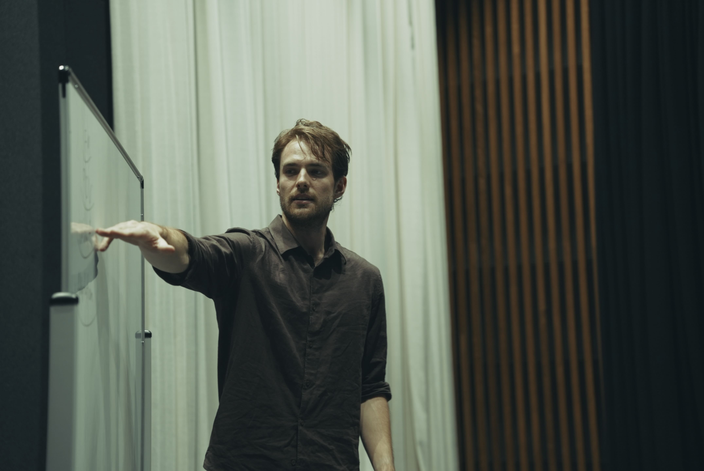
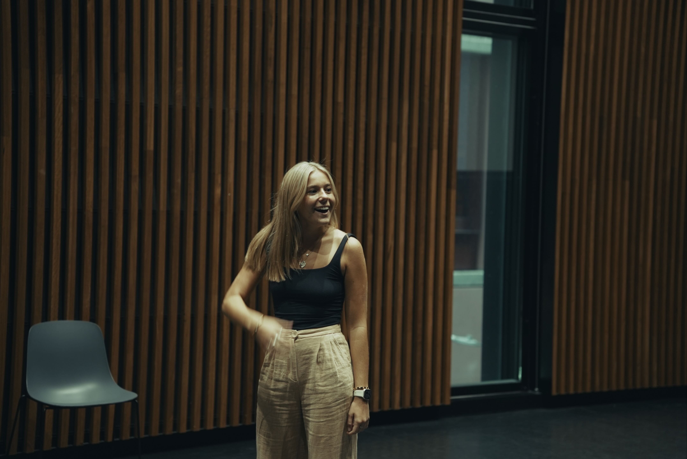
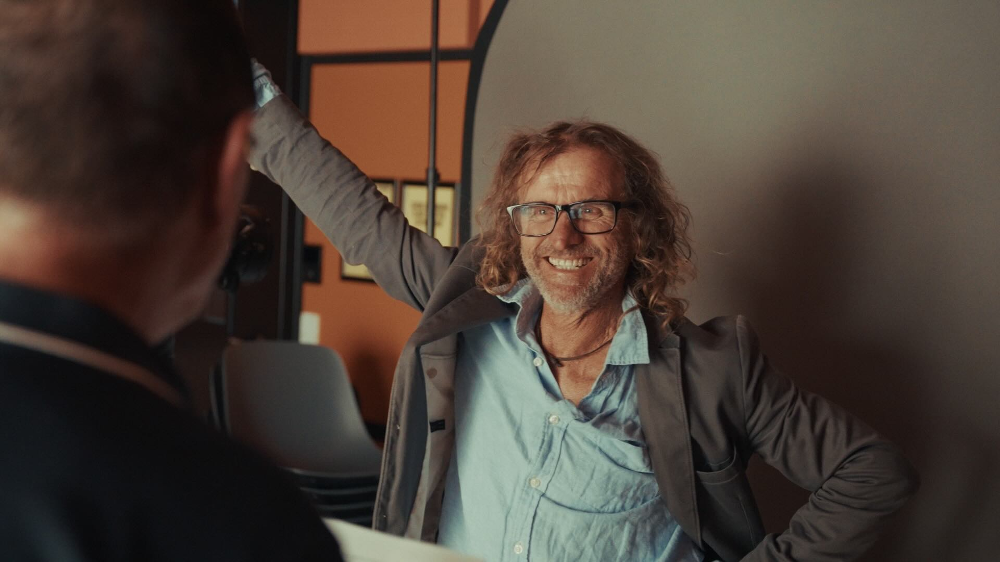

Weeks 1-4
The Acting Instrument
Focus: Developing a responsive, reliable instrument that can carry a wider range of stories without overthinking.
Outcomes:
- Confidence in your embodied acting instrument (not just the idea of it).
- Expanded range of stories your instrument can action.
- Reduced analysis paralysis; faster access to your instinctual being.
Why this matters: If the instrument isn’t flowing, no amount of “story understanding” or “screen awareness" will leave an imprint on your audience.


